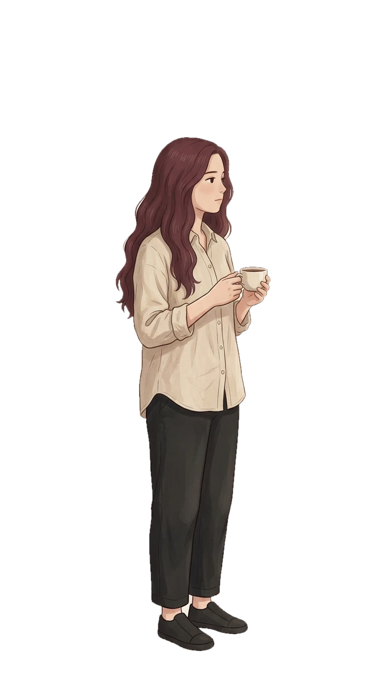

responder correos
reunión de equipo
informe mensual
llamar al banco
pagar cuentas
revisar pendientes
almuerzo en el escritorio
otra reunión
supermercado
mensajes
preparar mañana
responder correos
reunión de equipo
informe mensual
llamar al banco
pagar cuentas
revisar pendientes
mensajes
preparar mañana
responder correos
afuera · todo avanza
07:40

adentro · el tiempo no pasa
Dormí todo el fin de semana.
Llegó el lunes y amanecí igual de vacía.
No es sueño atrasado.
Dormir no lo repone.
Estoy funcionando — pero no estoy.
Quizá no necesito descansar más.
Quizá esto que cargo tiene otra forma,
y todavía no tiene nombre.